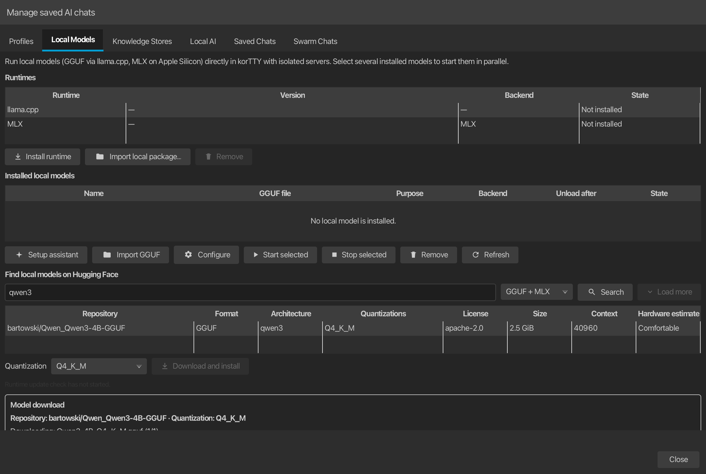

Lokale Modelle (llama.cpp und MLX)¶
korTTY kann lokale Sprachmodelle direkt über integrierte, modellspezifische Sidecar-Server ausführen: GGUF Modelle durch die angehefteten lama.cpp llama-server auf jeder Plattform und – auf Apple Silicon Macs – MLX Modelle durch die offizielle mlx-lm Server. Sie benötigen weder LM Studio, Ollama noch ein Cloud-Inferenzkonto für lokale Chat-, Text-, Codierungs-, Übersetzungs- und Einbettungs-Workloads.
Öffnen Sie KI > KI-Manager und verwenden Sie diese Registerkarten:
- Local Models installiert, importiert, konfiguriert, startet, stoppt und entfernt lokale Modellregistrierungen (GGUF überall, zusätzlich MLX auf Apple Silicon).
- Lokale KI weist Profile den Rollen Text/Übersetzung und Codierung sowie den KI-Zusammenfassungen des Sitzungsjournals zu, wählt das RAG-Einbettungsmodell aus, speichert ein optionales Hugging Face-Token und zeichnet die Laufzeitaktualisierungsrichtlinie llama.cpp auf.
- Profiles erstellt ein Integrated llama.cpp- oder Integrated MLX (Apple Silicon)-Profil für ein installiertes Modell und steuert dessen Prompt-Optimierungsvoreinstellung.
Jede Aktionsschaltfläche auf der Registerkarte trägt ein entsprechendes Symbol (Installieren, Assistent, Importieren, Konfigurieren, Als Standard festlegen, Starten, Stoppen, Entfernen, Aktualisieren, Suchen, Weitere laden, Herunterladen, Anhalten, Abbrechen), und die Pausensteuerung wechselt während eines Downloads zwischen den Symbolen „Pause“ und „Fortsetzen“.

Laufzeiten¶
In der Tabelle Laufzeiten oben unter „Lokale Modelle“ werden beide eingebetteten Laufzeiten mit ihrer installierten Version, ihrem Backend und ihrem Status („Bereit“, „Nicht installiert“ oder „Widerrufen“) aufgelistet: die Laufzeit llama.cpp (jede Plattform) und auf Apple Silicon die Laufzeit MLX. Drei Aktionen wirken sich auf die ausgewählte Zeile aus:
- Install Runtime / Check-Install Runtime Update lädt das neueste kompatible Paket vom signierten stabilen Kanal herunter, überprüft und aktiviert es – den llama.cpp-Index für die Lama-Zeile, den
mlx-stable-Index für die MLX-Zeile. - Lokales Paket importieren… installiert eine Laufzeitpaketdatei (
.zip), ohne sie herunterzuladen, beispielsweise auf einem Air-Gap-Computer. Die Datei wird nur akzeptiert, wenn ihr SHA-256 mit einem nicht widerrufenen Eintrag des Ed25519-signierten stabilen Index für die aktuelle Plattform übereinstimmt; Alles, was nicht vom signierten Kanal veröffentlicht wird, wird abgelehnt. Das verifizierte Paket durchläuft dann genau die gleichen Installationsmechanismen wie ein Download (Extraktionshärtung, Integritätsprüfung, Aktivierung nur im Leerlauf). - Remove löscht die ausgewählte Laufzeit nach Bestätigung. Beiwagen müssen im Leerlauf sein; Installierte Modelle bleiben registriert, können aber nicht gestartet werden, bis eine Laufzeit erneut installiert wird, und die Sperrliste überlebt die Entfernung, sodass ein zurückgezogenes Paket auch bei Neuinstallationen blockiert bleibt.
Speicher- und Netzwerkzugriff
Die Modellinferenz bleibt auf diesem Computer. korTTY kontaktiert Hugging Face nur, wenn Sie nach einem von Ihnen genehmigten Modell suchen oder es herunterladen. Öffentliche Repositories funktionieren ohne Token; Ein optionales Token für private oder geschlossene Repositorys wird mit dem Master-Passwort verschlüsselt. Offizielle Builds können den separat signierten Modell-/Prompt-Katalog auch über HTTPS im Hintergrund abrufen; Mit dieser Anfrage wird keine Eingabeaufforderung, kein Quelldokument oder kein Modellgewicht gesendet.
Schneller Einrichtungsassistent¶
Wählen Sie KI > KI-Manager > Lokale Modelle > Einrichtungsassistent. Der sechsstufige Assistent umfasst Datenschutz, erkannten Systemspeicher und Backend-Anleitung, optionale rollenspezifische Empfehlungen, Lizenz- und genaue Überprüfung der Downloadgröße, verifizierte Installation und eine abschließende Zusammenfassung der Bereitschaft.
Aktivieren Sie unter Modelle für optionale Rollen auswählen eine beliebige Kombination aus Text und Übersetzung, Codierung und RAG-Einbettungen. Jeder aktivierte Steckplatz verfügt über einen eigenen Empfehlungsselektor, der alle Katalogmodelle auflistet, die der erkannte Speicher für diese Rolle unterstützt, sortiert nach Präferenz, wobei der bevorzugte Standard vorab ausgewählt ist – eine echte Auswahl, kein einziger fester Vorschlag. Deaktivierte Slots bleiben unverändert. Text und Codierung teilen möglicherweise absichtlich eine kompatible Empfehlung. In diesem Fall lädt korTTY diesen GGUF nur einmal herunter und registriert ihn. Wenn Sie den Assistenten über eine Warnung wegen fehlender Einbettung öffnen, wird nur der RAG-Einbettungsslot vorab ausgewählt.
Der integrierte Bootstrap-Katalog verwendet konservative RAM-Stufen. Die Tabelle zeigt den vorausgewählten Standard pro Rolle; Der Selektor eines aktivierten Steckplatzes bietet zusätzlich jedes andere Katalogmodell an, dessen Speicherbedarf die erkannte Stufe erfüllt:
| Erkannter Speicher | Textempfehlung | Codierungsempfehlung | RAG-Einbettungen |
|---|---|---|---|
| Weniger als 16 GiB | Qwen3 1.7B, Q4_K_M |
Qwen3 1.7B, Q4_K_M |
Qwen3-Embedding 0.6B, Q8_0 |
| 16–23 GiB | Qwen3 4B, Q4_K_M |
Qwen2.5-Coder 7B Instruct, Q4_K_M |
Qwen3-Embedding 0.6B, Q8_0 |
| 24 GiB oder mehr | Qwen3 8B, Q4_K_M |
Qwen2.5-Coder 7B Instruct, Q4_K_M |
Qwen3-Embedding 0.6B, Q8_0 |
Für den RAG-Embeddings-Slot bleibt Qwen3-Embedding 0.6B Q8_0 der vorab ausgewählte Standard auf jeder Ebene; Der Selektor bietet außerdem Qwen3-Embedding 4B Q4_K_M (ab 16 GiB), Qwen3-Embedding 8B Q4_K_M (ab 24 GiB) und – ohne Mindestspeicherbedarf – den mehrsprachigen BGE-M3 Q8_0 und den sehr kleinen, schnellen Nomic Embed Text v1.5 Q8_0.
Empfehlungen sind Ausgangspunkte, keine Hardwaregarantien. Die Modelltabelle kennzeichnet die geschätzte Passform als Bequem, Möglich, Zu groß oder Unbekannt; Kontextgröße und gleichzeitige Modelle wirken sich auch auf die Speichernutzung aus.
Bevor Install verfügbar wird, lädt korTTY jedes ausgewählte Repository mit der festen Revision des Katalogs im Hintergrund, überprüft, ob die angeforderte Quantisierung vorhanden ist, und zeigt das angeheftete Repository, die Lizenz und die genaue kombinierte GGUF-Downloadgröße an. Sie müssen diese Werte überprüfen und akzeptieren. Eine veränderliche Repository-Revision oder fehlende Quantisierung stoppt den Assistenten, bevor ein Download beginnt.
Laufzeitinstallation, GGUF-Downloads, Verifizierung, Registrierung und Funktionstests werden asynchron ausgeführt, sodass der JavaFX-Dialog weiterhin reagiert. Die Fortschrittsansicht benennt das aktuelle Modell und die aktuelle Phase. Installation abbrechen stoppt an einer sicheren Grenze und behält fortsetzbare .part-Dateien bei, während Wiederholen einen fehlgeschlagenen oder abgebrochenen Lauf mit den überprüften Auswahlen neu startet.
Die vom Hub gemeldete Kontextlänge bleibt zum Vergleich sichtbar, aber ein neues lokales Modell beginnt mit dem konservativen Laufzeitkontext von 4.096 Token. Erhöhen Sie ihn später unter Konfigurieren nur unter Berücksichtigung der zusätzlichen RAM/VRAM-Nutzung.
Nachdem jeder ausgewählte GGUF heruntergeladen und registriert wurde, sendet der Assistent eine echte lokale Chat-Abschlussanfrage oder, für ein reines Einbettungsmodell, eine echte Einbettungsanfrage über die installierte Laufzeit. Erst nachdem alle Tests bestanden wurden, werden die ausgewählten Text-/Codierungsprofil-IDs und die RAG-Einbettungsmodell-ID atomar in global-settings.xml gespeichert. Es erstellt ein wiederverwendbares Lokal: … eingebettetes Profil, wenn ein ausgewähltes Chat-Modell keines hat, und macht das erste derartige Profil nur dann zum Standard, wenn kein Standard vorhanden ist. Ein fehlgeschlagener Test führt nicht zu einer erfolgreichen Abschlussseite oder zur Beibehaltung teilweise aktualisierter Rollenzuweisungen.
Signiertes Modell und prompter Katalog¶
korTTY enthält immer einen kleinen Bootstrap-Katalog mit den Empfehlungen zur Speicherschicht und der Erkennung der Eingabeaufforderungsfamilie, die für die Offline-Einrichtung erforderlich sind. Alle neun gebündelten Modellempfehlungen enthalten einen konkreten Hugging Face-Commit mit 40 Zeichen, sodass selbst der Bootstrap niemals einen veränderlichen Repository-Kopf auflöst, wenn der Assistent später Metadaten oder GGUF-Dateien abruft. Offizielle Builds können diese Daten unabhängig von der Anwendung über model-prompt-catalog-v1.json und die separate Ed25519-Signatur model-prompt-catalog-v1.sig aktualisieren.
Bei der ersten Verwendung von Empfehlungen oder der automatischen Eingabeaufforderungserkennung lädt korTTY sofort den letzten signaturverifizierten Cache und führt höchstens eine Hintergrundaktualisierung über den festen HTTPS-Stabilkanal durch. Der Katalog kann empfohlene Modell-IDs, feste Revisionen, Quantisierungen, Rollen, RAM-Schwellenwerte und Reihenfolge sowie die Zuordnung von Modellnamen-Tokens zu integrierten Eingabeaufforderungsvoreinstellungen aktualisieren. Es kann keinen beliebigen ausführbaren Code einschleusen oder die integrierten Aktions-, Sicherheits-, JSON- oder Codeausgabeverträge von korTTY ersetzen.
Die genauen Katalogbytes werden vor der strikten Schema-v1-Analyse überprüft und unbekannte Schemafelder werden abgelehnt. Bei einem fehlgeschlagenen Download, einer ungültigen Signatur oder einem ungültigen Katalog bleibt der letzte gültige Cache unberührt. Wenn der Anwendungsbuild kein gültiges öffentliches Vertrauensstammverzeichnis für den Katalog hat, führt korTTY keine Katalognetzwerkanfrage aus, vertraut keinem vorhandenen Cache und verwendet nur den integrierten Bootstrap.
Jeder Katalog trägt auch eine positive monotone Folge. Während der Aktualisierung lehnt korTTY einen signierten Katalog ab, dessen Sequenz älter als der zuletzt akzeptierte Cache oder Bootstrap ist, und lehnt einen Katalog gleicher Sequenz mit einer anderen Version ab. Ein neu akzeptierter Katalog mit der höchsten Sequenz muss in den Atomcache geschrieben werden, bevor er aktiv wird; Der geschützte Promotion-Workflow erfordert separat, dass jede offizielle Sequenz streng größer als die Sequenz in der neuesten veröffentlichten Version sein muss, wodurch verhindert wird, dass ein korrekt signierter älterer Katalog veraltete Empfehlungen wiedergibt.
Modelle finden und herunterladen¶
Der Browser Hugging Face durchsucht Modellrepositorys und zeigt Repository, Format, Architektur, verfügbare Quantisierungen, Lizenz, ausgewählte Quantisierungsgröße, Kontextlänge, Veröffentlichungsalter und eine Hardwareschätzung an. Die Spalte Alter gibt an, wann das Repository zum ersten Mal auf dem Hub veröffentlicht wurde – angezeigt als today, Tage, Monate oder Jahre und —, wenn der Hub kein Erstellungsdatum meldet. Auf Apple Silicon wechselt ein Format-Selektor neben dem Suchfeld zwischen GGUF + MLX (Standard), GGUF und MLX; Jedes aktivierte Format behält seine eigene Cursor-Paginierung und die Spalte Format identifiziert jede Zeile. Andere Plattformen durchsuchen nur GGUF.
Klicken Sie auf eine Spaltenüberschrift, um die Ergebnisse nach dieser Spalte zu sortieren. Ein zweiter Klick kehrt die Richtung um und in der Überschrift wird der aktive Sortierpfeil angezeigt. Größe, Kontext und Alter werden numerisch sortiert (Repositorys ohne gemeldetes Erstellungsdatum werden zuletzt sortiert), und die Hardwareschätzung sortiert von der besten zur schlechtesten Anpassung; Die gewählte Reihenfolge bleibt bestehen, während das Laden der Hintergrundmetadaten abgeschlossen ist.
Es werden nur Repositorys angezeigt, die dieser Computer tatsächlich ausführen kann: korTTY vervollständigt die kompakte Suchliste mit genauen Metadaten pro Datei im Hintergrund und blendet Zeilen aus, deren Größe unbekannt ist oder deren kleinste Quantisierung den erkannten Speicher überschreitet. In der Statuszeile wird angezeigt, wie viele nutzbare Repositories angezeigt und wie viele ausgeblendet wurden. Wenn Sie eine Zeile auswählen, werden genaue Metadaten für die unveränderliche Revision dieses Repositorys geladen und Laden... angezeigt, während Größe und Hardwareschätzung aktualisiert werden. die gewählte Quantisierung bleibt ausgewählt. Projektor-, Quantisierungsmatrix- und spekulative Dekodierungshilfs-GGUFs sind von den herunterladbaren Sprachmodelloptionen ausgeschlossen. Weitere laden setzt die gleiche Suche fort, ohne frühere Ergebnisse zu verwerfen. Wählen Sie ein Repository und eine Quantisierung aus, überprüfen Sie dessen Lizenz und Größe und wählen Sie dann Herunterladen und installieren.
korTTY installiert nur eine unveränderliche 40-Zeichen-Repository-Revision mit genauen Dateimetadaten. Nachdem Sie die Lizenz und die Downloadgröße bestätigt haben, werden unten in einem festen Modell-Download-Bereich das Repository und die Quantisierung, die aktuelle Datei und der Multipart-Shard, die übertragenen und gesamten Bytes, die verstrichene Zeit, die Übertragungsrate und die geschätzte verbleibende Zeit identifiziert. Der Fortschrittsbalken in voller Breite sowie die Steuerelemente Pause/Fortsetzen und Abbrechen bleiben verfügbar, während Sie den Manager weiterhin überprüfen. Für Downloads werden .part-Dateien, Freiraumprüfungen, HTTP Range und If-Range, Content-Digest-Überprüfung (SHA-256 für LFS-Dateien, der Git-Blob-Hash für kleine In-Tree-Dateien) und mehrteilige Shard-Reihenfolge verwendet. Bei einer Stornierung, einschließlich der Schließung des KI-Managers während einer Übertragung, bleiben die Teildaten erhalten, die für einen späteren Lebenslauf benötigt werden. Ein nicht angeheftetes Repository oder ein fehlender Datei-Digest wird abgelehnt, anstatt veränderbare Inhalte stillschweigend zu installieren.
Ein MLX-Repository wird als ein vollständiges Verzeichnis heruntergeladen (Safetensor-Gewichte, Tokenizer und Konfigurationsdateien); Seine Quantisierung ist eine Eigenschaft auf Repository-Ebene wie 4BIT oder 8BIT, daher zeigt der Quantisierungsselektor genau einen Eintrag an. Wenn noch keine MLX-Runtime installiert ist, fragt korTTY, ob das Modell trotzdem heruntergeladen und registriert werden soll – es kann gestartet werden, sobald die Runtime installiert ist.
MLX-Modelle auf Apple Silicon¶
Auf Apple Silicon Macs (macOS 14 oder neuer) läuft korTTY zusätzlich MLX models – Apples Array-Framework für maschinelles Lernen auf Apple-GPUs – durch den Beamten mlx-lm Server. Der mlx-Community Die Organisation auf Hugging Face veröffentlicht Tausende fertig konvertierter Modelle.
- Registrierung und Lebenszyklus spiegeln GGUF-Modelle wider: Installierte MLX-Modelle werden in derselben Tabelle mit Backend MLX angezeigt, unterstützen Auswahl starten, Auswahl stoppen, Entfernen und Konfigurieren (Anzeigename und Entladen nach Leerlaufzeit) und melden dieselben Laufzeitzustände.
- Isolation spiegelt llama.cpp wider: Jedes Modell läuft als sein eigener reiner Loopback-Sidecar mit einem zufälligen Port und einem pro Prozess generierten API-Schlüssel. korTTY bindet
mlx_lm.server– das über keine eigene Authentifizierung verfügt – in einen eigenen Launcher ein, der jede nicht authentifizierte Anfrage außer der lokalen Gesundheitsprüfung ablehnt, den Offline-Zugriff auf Hugging Face erzwingt, geerbte Python- und Token-Umgebungsüberschreibungen entfernt und nach der konfigurierten Leerlaufzeit beendet. - Das MLX-Laufzeitpaket ist sowohl vom Anwendungsinstallationsprogramm als auch von der llama.cpp-Laufzeit getrennt: ein angehefteter verschiebbarer CPython plus ein Hash-gesperrter
mlx-lm-Radsatz, integriert in CI und veröffentlicht über denselben Ed25519-signierten Indexmechanismus wie die llama.cpp-Pakete (rollendermlx-stable-Index). Installieren, aktualisieren, lokal importieren oder in der Tabelle Laufzeiten entfernen; Ohne installierte MLX-Laufzeit bleiben MLX-Modelle registriert, können aber nicht gestartet werden. - Profile: Wählen Sie Integriertes MLX (Apple Silicon) als Profilverbindung und wählen Sie das installierte Modell aus der Liste Lokales MLX-Modell aus. LM-Studio-MCP-Internetmodi sind für eingebettete Profile nicht verfügbar; Das korTTY-Websuchtool funktioniert normal.
- Reasoning-Modelle (z. B. Qwen3-Konvertierungen) werden wie ihre GGUF-Gegenstücke behandelt: korTTY trennt die Inline-Gedankenkette von der Antwort und wiederholt automatisch eine Antwort, die nur Reasoning enthält (mit Ausnahme der dedizierten Snippet-/Workflow-Diagramm-Anfrage, die stattdessen sofort fehlschlägt).
Vorhandene GGUF-Dateien importieren¶
Wählen Sie GGUF importieren, wählen Sie eine oder mehrere .gguf-Dateien und dann einen Modus:
| Modus | Verhalten |
|---|---|
| Verwaltete Kopie | Kopiert den GGUF mithilfe einer temporären Datei und atomarer Aktivierung in das Modellverzeichnis von korTTY, sofern das Dateisystem dies unterstützt. |
| Externe Referenz | Registriert den ursprünglichen Pfad. Durch das Verschieben oder Löschen dieser Datei ist das Modell nicht mehr verfügbar. Durch das Entfernen der Registrierung wird die externe Datei niemals gelöscht. |
Außerdem muss eine kompatible, verifizierte llama-server-Laufzeitumgebung installiert sein. Laufzeitpakete befinden sich separat unter ~/.kortty/llm/runtime/ und sind nicht Teil des Installationsprogramms der Basisanwendung. Wenn Sie das erste Modell herunterladen oder importieren, bietet korTTY an, die passende signierte stabile Laufzeit zu installieren, bevor Sie fortfahren. Sie können auch Laufzeit installieren unter Lokale Modelle auswählen. Der Modellmanager akzeptiert keine beliebige ausführbare Datei als Ersatz für das verifizierte Paket.
Modelle konfigurieren und ausführen¶
Die Tabelle „installed-models“ enthält auch eine Spalte Alter: das Upstream-Veröffentlichungsdatum des Modells, das einmal zur Installationszeit erfasst wird. Modelle, die installiert wurden, bevor diese Spalte existierte, und manuell importierte GGUF-Dateien haben kein erfasstes Datum und zeigen — an.
Wählen Sie ein installiertes Modell aus und wählen Sie Konfigurieren. Die verfügbaren Einstellungen sind bewusst typisiert und begrenzt; Beliebige Serverargumente werden nicht akzeptiert. Beim Speichern zuerst wird der Laufzeitmanager aufgefordert, das Modell zu stoppen. Wenn dieses Modell eine Anfrage verarbeitet, lehnt korTTY die Änderung ab und lässt sowohl den laufenden Sidecar als auch die persistente Konfiguration unberührt; Versuchen Sie es erneut, nachdem die Anfrage abgeschlossen ist.
| Einstellung | Werte | Standard |
|---|---|---|
| Backend | Auto, CPU, Metall, Vulkan | Auto |
| Kontextgröße | 512–2.097.152 Token | 4.096 |
| CPU-Threads | 0–1.024; 0 bedeutet automatisch |
automatisch |
| GPU-Schichten | -1–10.000; -1 bedeutet automatisch |
automatisch |
| Entladen nach | 1–1.440 Minuten oder Niemals | 10 Minuten |
Das Backend pro Modell beschreibt, wie dieses Modell ausgeführt werden soll. In KI-Manager > Local AI steuert Bevorzugtes Laufzeit-Backend, welches signierte native Paket installiert und aktualisiert wird: macOS bietet Auto, CPU und Metal; Windows/Linux bieten Auto, CPU und Vulkan. Automatisch (aktives Backend beibehalten) behält das bereits aktive Backend bei Aktualisierungen bei. Bei einer Erstinstallation bevorzugt Auto Metal und greift unter macOS auf CPU zurück; unter Windows und Linux bevorzugt es die CPU und greift nur dann auf Vulkan zurück, wenn kein kompatibles CPU-Paket veröffentlicht wird. Ein explizit ausgewähltes Backend erfordert ein exakt kompatibles Paket und wechselt niemals stillschweigend zu einem anderen Backend.
Verwenden Sie die Mehrfachauswahl und Auswahl starten, um mehrere verschiedene Modelle gleichzeitig zu laden. Profile, die auf dasselbe installierte Modell und dieselbe Laufzeitkonfiguration verweisen, teilen sich einen authentifizierten Sidecar. Die Tabelle meldet STOPPED, STARTING, LOADING, READY, BUSY, SLEEPING oder FAILED.
Sie können ein installiertes Modell mit Als Standard festlegen in der Aktionsleiste oder im Rechtsklickmenü der Tabelle als Standardmodell markieren. Standard löschen im selben Menü entfernt die Markierung. Das Standardmodell wird mit einem führenden ★ in der Spalte „Name“ angezeigt und ist beim Öffnen des Managers vorab ausgewählt, sodass die Aktionen „Starten/Konfigurieren/Stoppen“ standardmäßig darauf abzielen. Dies ist nur eine praktische Markierung für den Manager – es ändert nichts daran, welches KI-Profil der Agent, Chat oder andere KI-Funktionen verwendet; diese folgen weiterhin der AI-Profilkonfiguration.
Wenn ein ausgewähltes Metal- oder Vulkan-Modell ein anderes Paket als die aktive Laufzeit erfordert, bietet korTTY an, das passende signierte Paket herunterzuladen, zu überprüfen und zu aktivieren, ohne aktuelle Anfragen zu unterbrechen. Modelle, die inkompatible GPU-Laufzeiten erfordern, müssen separat mit dem passenden bevorzugten Backend gestartet werden.
Nach der konfigurierten Leerlaufzeit gibt llama.cpp die Modelltensoren aus RAM/VRAM frei und korTTY markiert das Modell als schlafend, während der Lightweight-Prozess beibehalten wird. Die nächste Anfrage erwirbt eine Laufzeitmiete und aktiviert das Modell automatisch. Ausgewählter Stopp beendet nur inaktive Beiwagen; Eine aktive Generierung wird niemals durch eine Modellentfernung oder eine normale Stoppanforderung unterbrochen.
Um diese Aktivität sichtbar zu machen, zeichnet korTTY den Anforderungs- und Modelllebenszyklus in kortty.log auf (unter dem Protokollverzeichnis, das unter Konfiguration > Globale Einstellungen > Protokollierung konfiguriert ist, Standard ~/.kortty/logs). Jede KI-Anfrage protokolliert eine AI request sent-Zeile und eine entsprechende AI request done/AI request failed-Zeile mit der Aktion, dem Anbieter, dem Modell, der Reasoning-Ebene, die die Anfrage tatsächlich verwendet (reasoningEffort=), ungefährer Eingabegröße, Dauer und Token-Anzahl – nur Metadaten, niemals den Eingabeaufforderungs- oder Antworttext. Lokale Modelle protokollieren zusätzlich, wenn ein Modell Loaded, Unloaded … (sleeping) nach dem Leerlauf-Timeout oder Unloaded … sidecar stopped ist, sowohl für die Laufzeiten llama.cpp als auch MLX. Bei all diesen Zeilen handelt es sich um INFO-Zeilen, daher werden sie mit der Standardprotokollstufe angezeigt.
Vom Modell selbst gemeldete Fehler werden ebenfalls protokolliert, sodass eine fehlgeschlagene Anfrage allein anhand des Protokolls diagnostiziert werden kann:
AI request failedträgt den eigenen Fehlertext des Servers (seinenerror.messageoder den rohen Antworttext, wenn er nicht JSON ist) und hängt| caused by: …für jede verschachtelte Nachricht an, was einen abgelehnten Anforderungsparameter von einem entladenen Modell oder einem nicht erreichbaren Endpunkt unterscheidet.- Ein Verbindungstest, den das Modell ablehnt, protokolliert den Grund als
Embedded MLX/llama.cpp connection test failed; Bisher sah der Anrufer nur einen fehlgeschlagenen Test ohne Erklärung. - Wenn die im Profil gespeicherte Reasoning-Ebene nicht die vom Modell angebotene ist, protokolliert korTTY eine Warnung mit der Nennung der konfigurierten Ebene, der stattdessen verwendeten Ebene und der tatsächlich verfügbaren Ebenen und sendet dann die Anfrage auf der Ersatzebene. Ohne diese Zeile würde die Anfrage stillschweigend auf einer anderen Ebene ausgeführt werden, als der KI-Manager anzeigt.
- Ein lokaler Sidecar, der nicht startet oder unerwartet beendet wird, protokolliert das Ende seines eigenen Serverprotokolls, sodass die Fehlerausgabe der Laufzeit ebenfalls in
kortty.loglandet.
Text-, Codierungs-, Übersetzungs- und Einbettungsrollen¶
Wählen Sie unter KI-Manager > Lokale KI separate Profile für Text und Übersetzung und Codierung. Wenn Sie eine der beiden Optionen auf Standard-KI-Profil verwenden belassen, bleibt der normale Fallback erhalten. Derselbe Bereich enthält auch einen Sitzungsjournalprofil-Selektor, der nur für die KI-Zusammenfassungen des Sitzungsjournals verwendet wird – die Text-/Codierungsrollen gelten dort nicht; Behalten Sie das Standardprofil bei, es sei denn, das Journal soll auf einem anderen Modell laufen. Terminalzusammenfassung, Problemlösung, Fragen, Beschreibungen und Übersetzung verwenden die Textrolle; Für die Generierung, Vervollständigung, Analyse, Sicherheitskorrekturen und Workflow-Generierung von Snippets wird die Coding-Rolle verwendet.
Die Profilauflösung folgt der spezifischsten verfügbaren Auswahl: einem explizit ausgewählten Profil, dann ggf. einem sicherheitsspezifischen Profil oder Verbindungsprofil, dann der Text-/Codierungsrolle und dann dem Standardprofil. Der gleiche Rollenmechanismus funktioniert mit eingebetteten, Remote-HTTP- oder lokalen CLI-Profilen; Eine Rolle erzwingt kein lokales Modell.
Für die dynamische UI-Übersetzung kann Lokales AI-Textprofil unter Konfiguration > Globale Einstellungen > Übersetzung verwendet werden. Dieser Pfad sendet die Übersetzungsanforderung an das zugewiesene eingebettete Textprofil und erfordert keinen Übersetzungsanbieter-API-Schlüssel.
Die RAG-Einbettungsmodell-ID identifiziert das installierte lokale Modell, das zur Vektorisierung von Wissensspeicherdokumenten und -suchen verwendet wird. Verwenden Sie ein dediziertes Einbettungs-GGUF anstelle eines Chat-Modells, es sei denn, dieses Modell unterstützt explizit die Einbettungsroute und die konfigurierten Vektordimensionen.
Prompte Optimierung¶
Jedes KI-Profil verfügt über eine Voreinstellung für Prompte Optimierung. Auto (Modellerkennung) verwendet die Modellnamenzuordnung des verifizierten Katalogs, dessen Bootstrap Qwen-, DeepSeek-, Mistral/Mixtral-, Gemma-, Phi-, GPT-OSS- und Llama-Namen erkennt; Allgemein fügt keine familienspezifische Anleitung hinzu. Sie können auch jede Familienvoreinstellung erzwingen, wenn ein Modellname ungewöhnlich ist.
Voreinstellungen fügen kurze Kompatibilitätsanweisungen nach dem Aktionsvertrag und den KI-Fähigkeiten von korTTY hinzu und behalten gleichzeitig die bestehenden strengen JSON-, Code-Payload- und Sicherheitsanforderungen bei. Die GGUF-Chat-Vorlagen selbst bleiben in der Verantwortung von llama.cpp. Die Voreinstellung fordert unterstützte Modelle auf, nur das angeforderte Endformat zurückzugeben und Reasoning-Spuren aus JSON-/Code-Antworten fernzuhalten.
Runtime-Isolation und Updates¶
Jede geladene Konfiguration startet llama-server auf 127.0.0.1 mit einem zufälligen Port und einem pro Prozess generierten API-Schlüssel. korTTY übergibt einen festen Modellpfad, entfernt geerbte LLAMA_ARG_*- und Hugging Face-Token-Überschreibungen und startet den angehefteten Server im Offline-Modus sowie deaktivierter Web-Benutzeroberfläche, Agent, UI-MCP-Proxy und Slot-Endpunkt. Chat und Einbettungen verwenden authentifizierte OpenAI-kompatible lokale Routen.
Chat-Sidecars behalten die standardmäßige Reasoning-Analyse des Servers bei, die sowohl Reasoning-Modelle im <think>-Stil (deren Gedankenkette separat zurückgegeben wird) als auch Kanal-/Harmony-Modelle wie gpt-oss (die diese Analyse erfordern, um überhaupt eine endgültige Antwort zu liefern) korrekt verarbeitet. Der angeheftete Server kann immer noch gelegentlich eine ganze Antwort mit einem HTTP 500 („entspricht nicht dem erwarteten … Format“) antworten, wenn eine Antwort mehrdeutig geparst wird; korTTY wiederholt einen lokalen Serverfehler, eine leere Antwort oder eine reine Reasoning-Antwort einmal automatisch, bevor es sie meldet (für die dedizierte Snippet-/Workflow-Diagramm-Anfrage wird nur ein Serverfehler erneut versucht) und entfernt defensiv alle Reasoning-Markierungen, die in den Inhalt eindringen.
Der Laufzeit-Build ist unabhängig vom Anwendungsinstallationsprogramm. gradle/llama-cpp-pins.properties pinnt das Upstream-Tag llama.cpp, das vollständige Commit und das Quellarchiv SHA-256 (plus den Verlauf der versendeten Pins), während build.gradle.kts die API-Vertragsversion und die korTTY-Paketrevision beibehält. Das korTTY-Repository erkennt Kandidaten und validiert seine quellseitige native Matrix, enthält jedoch kein Veröffentlichungstoken oder Laufzeitsignaturschlüssel. Der öffentliche korTTY llama.cpp-Laufzeitkanal besitzt eine explizite, von Menschen gesendete stabile Veröffentlichung: Er erstellt den überprüften Quell-Commit neu, führt Authentifizierung, Chat/Vervollständigung, Einbettungen, JSON-Schema, Sleep/Wake und Parallel-Sidecar-Rauchtests für jedes Paket sowie einen separaten Qdrant-Vertrag aus und veröffentlicht unveränderliche Deskriptoren mit seinem eigenen github.token mit eigenem Gültigkeitsbereich erst nach Eintritt in die geschützte Signaturumgebung. CUDA ist kein v1-Backend.
Das Aktualisierungsformat verwendet die getrennte Ed25519-Signatur runtime-index-v1.sig über die exakten Bytes von runtime-index-v1.json. Jeder Eintrag bindet die Laufzeit-ID, das Upstream-Tag und den Commit, die API-Vertragsversion, die korTTY-Mindestversion, die Plattform, die Architektur, das Backend, die komprimierte Größe, SHA-256, die HTTPS-URL, den ausführbaren Pfad und den Sperrstatus. Der öffentliche Verifizierungsschlüssel ist bei config/trust/llama-runtime-ed25519-public.pem überprüfbar und in normale lokale und Release-Builds eingebettet; Eine optionale CI- oder Gradle-Überschreibung muss genau mit dieser angehefteten Identität übereinstimmen. Ein fehlender oder ungültiger Vertrauensstamm, eine nicht übereinstimmende Überschreibung, Indexsignatur, Paketgröße oder ein Paket-Hash stoppen den Vorgang, bevor nicht vertrauenswürdiger Code aktiviert wird.
Ein Paket wird neben der aktiven Version installiert und vor der Aktivierung lokal mit einem begrenzten llama-server --version-Start überprüft. Die Aktivierung und die atomare Neubindung registrierter Modelle erfolgen nur, während alle lokalen Rückschlüsse inaktiv sind. Der Kandidat bleibt dann bis zum ersten Start, bis ein echter GGUF-gestützter Server seine authentifizierte API erreicht: Bei Erfolg wird er in den fehlerfreien Verlauf befördert, während der erste fehlgeschlagene echte Start die neueste, nicht widerrufene vorherige Laufzeit wiederherstellt, betroffene Modelle erneut bindet, das fehlgeschlagene Paket entfernt und die Laufzeitverwaltung neu startet. Die beiden neuesten fehlerfreien Installationen bleiben erhalten und ein Paket, das während der aktiven Arbeit bereitgestellt wird, wird nach Abschluss der Anforderungen erneut versucht. Release CI führt vor der Veröffentlichung die tiefergehenden authentifizierten Chat-, Einbettungs-, JSON-Schema-, Sleep/Wake- und Parallel-Sidecar-Vertragstests durch.
Für die Überprüfungen Benachrichtigen und Stabile Updates automatisch installieren wird sofort eine verifizierte Indexentfernung erzwungen. korTTY behält zunächst die widerrufenen Laufzeit-/Installations-IDs in einer dauerhaften Denylist bei und schreibt eine paketlokale Quarantänemarkierung, löscht dann den aktiven Zeiger, stoppt seine Sidecars, entfernt widerrufene Versionen aus dem Rollback-Verlauf und ersetzt betroffene Modellbindungen durch eine nicht ausführbare Markierung. Sowohl das Laufzeitinstallationsprogramm als auch jeder neue Prozessstart konsultieren diese Wächter, sodass eine unterbrochene Bereinigung oder ein veralteter models.xml-Eintrag die zurückgezogene ausführbare Datei nicht neu starten kann. Die lokale KI bleibt blockiert, bis ein kompatibler signierter Ersatz installiert wird; Das Hauptfenster und der Status „Lokale Modelle“ geben Auskunft über die widerrufene Laufzeit und ob ein verifizierter Ersatz verfügbar ist. Off führt keine Netzwerkprüfung durch und kann daher erst dann von einer neu veröffentlichten Auszahlung erfahren, wenn der Benutzer die Überprüfung des signierten Index explizit überprüft oder aktiviert.
Die MLX-Laufzeitumgebung (Apple Silicon) verfügt über keine Quarantänemarkierung pro Modell, da MLX-Modelle an ein Modellverzeichnis und nicht an die Laufzeit gebunden sind. Seine Durchsetzung löscht den aktiven Zeiger, stoppt jeden MLX-Sidecar und zeichnet die zurückgezogene ID in einer dauerhaften Sperrliste auf, sodass sie nie wieder installiert oder reaktiviert werden kann. Registrierte MLX-Modelle bleiben registriert, können jedoch erst gestartet werden, wenn eine nicht widerrufene MLX-Laufzeit installiert ist.
Die Einzelauswahl Laufzeitaktualisierungen (llama.cpp & MLX) steuert die automatische Prüfung, die mit korTTY und bei jedem Speichern der Einstellung gestartet wird, und gilt für beide eingebettete Laufzeiten:
| Richtlinie | Startverhalten |
|---|---|
| Aus | Führt für keine Laufzeit eine Netzwerkanforderung zur Laufzeitaktualisierung durch. Nicht widerrufene installierte Laufzeiten bleiben nutzbar, während jede bereits lokal persistente Entnahme erzwungen bleibt. |
| Benachrichtigen (Standard) | Überprüft den signierten stabilen Index jeder installierten Laufzeit und zeigt eine Benachrichtigung an, wenn ein kompatibles Update für eine installierte Laufzeit verfügbar ist (llama.cpp und, auf Apple Silicon, MLX), ohne es automatisch zu installieren. Ohne installierte Laufzeit erscheint kein Popup; Das verfügbare Paket wird weiterhin unter „Lokale Modelle“ aufgeführt. Eine verifizierte Entnahme einer der beiden Laufzeiten wird sofort erzwungen. |
| Stabile Updates automatisch installieren | Lädt ein kompatibles stabiles Paket für jede Laufzeit herunter, überprüft, installiert und aktiviert es, einschließlich eines sicheren Ersatzes für eine zurückgezogene aktive Version; Eine ausgelastete Laufzeit verschiebt die Aktualisierung, anstatt eine aktive Anforderung zu unterbrechen. |
Die Tabelle Laufzeiten in Lokale Modelle zeigt die installierte Version und den Status pro Laufzeit. Die Aktionsschaltfläche lautet Runtime installieren, wenn die ausgewählte Runtime kein verifiziertes Paket hat, andernfalls Runtime-Update prüfen/installieren und prüft/installiert den stabilen Kanal, selbst wenn die gespeicherte automatische Richtlinie Aus oder Benachrichtigen ist. Laufzeitkandidaten werden durch einen wöchentlichen Workflow entdeckt, die Heraufstufung bleibt jedoch eine bewusste, überprüfte Release-Aktion, anstatt jedes Upstream-Tag automatisch zu übernehmen.
Dateien und Sicherungsverhalten¶
| Pfad | Zweck | In einem korTTY-Backup enthalten? |
|---|---|---|
~/.kortty/global-settings.xml |
Eingebettete Profile, Text-/Codierungszuweisungen, Einbettungsmodell-ID, Laufzeit-Backend/Update-Richtlinie, verschlüsseltes Hugging Face-Token | Ja |
~/.kortty/llm/models.xml |
Lokale GGUF-Modellregistrierungen und typisierte Laufzeiteinstellungen | Ja |
~/.kortty/llm/mlx-models.json |
Lokale MLX-Modellregistrierungen (Apple Silicon) | Ja |
~/.kortty/llm/models/ |
Verwaltete GGUF-Gewichte | Nein; Laden Sie sie herunter oder kopieren Sie sie erneut |
~/.kortty/llm/mlx/models/ |
Verwaltete MLX-Modellverzeichnisse | Nein; Laden Sie sie erneut herunter |
~/.kortty/llm/mlx/runtime/ |
Regenerierbare MLX-Laufzeitpakete (gepinnt CPython + mlx-lm) | NEIN; Installieren Sie ein kompatibles Paket neu |
~/.kortty/llm/runtime/ |
Regenerierbare llama.cpp-Pakete und Metadaten aktiver Pakete | NEIN; Installieren Sie ein kompatibles Paket neu |
~/.kortty/llm/catalog/last-valid-catalog-v1.json |
Regenerierbarer, signaturverifizierter Modell-/Prompt-Katalog-Cache | Nein; korTTY kehrt zum Bootstrap zurück und aktualisiert ihn erneut |
~/.kortty/llm/run/ |
Temporäre Beiwagenschlüssel und Protokolle | Nein |
Fehlerbehebung¶
- Es ist keine llama.cpp-Laufzeitumgebung installiert
- Öffnen Sie KI > KI-Manager > Lokale Modelle und wählen Sie Laufzeit installieren oder akzeptieren Sie die Installationsaufforderung, wenn Sie ein Modell herunterladen oder importieren. korTTY lädt das passende signierte stabile Paket herunter; Das Anwendungsinstallationsprogramm enthält absichtlich keine native Laufzeit.
- Eine signierte Laufzeitprüfung oder Installation schlägt fehl
- Bestätigen Sie, dass dieser korTTY-Build den offiziellen öffentlichen Schlüssel des Laufzeitkanals enthält, dass HTTPS-Zugriff auf den stabilen Index und das Paket verfügbar ist und dass die Plattform/Backend-Kombination veröffentlicht ist. korTTY schlägt fehl, geschlossen zu werden, anstatt einen fehlenden Vertrauensstamm, eine ungültige Signatur, eine nicht übereinstimmende Prüfsumme, einen inkompatiblen API-Vertrag oder eine Laufzeitquarantäne zu umgehen. Der Laufzeitaktualisierungskoordinator zeichnet die vollständige Fehlerursache und den Stack-Trace in
kortty.logunter dem Protokollverzeichnis auf, das unter Konfiguration > Globale Einstellungen > Protokollierung (Standard~/.kortty/logs) konfiguriert ist, auch wenn der Manager eine kürzere Statusmeldung anzeigt. - Die Laufzeit wird als widerrufen gemeldet
- Öffnen Sie KI > KI-Manager > Lokale Modelle und installieren Sie den angebotenen verifizierten Ersatz. Entfernen Sie nicht die Paketmarkierung und bearbeiten Sie
models.xmlnicht: Die dauerhafte Sperrliste blockiert weiterhin die Installation und widerrufene Versionen sind absichtlich nicht für ein Rollback oder eine Neuinstallation geeignet. Wenn kein kompatibler Ersatz aufgeführt ist, bleibt die lokale KI nicht verfügbar, bis der stabile Kanal einen für diese Plattform/dieses Backend veröffentlicht. - Eine neue Laufzeit wird beim ersten Modellstart zurückgesetzt
- Die einfache
--version-Prüfung wurde bestanden, aber der erste echte GGUF-gestützte authentifizierte API-Start schlug fehl. korTTY stellt das neueste fehlerfreie, nicht widerrufene Paket wieder her, sofern verfügbar, und meldet Rollback; Überprüfen Sie den Fehler „Lokale Modelle“, die Modell-/Backend-Kompatibilität und die Speichereinstellungen, bevor Sie das Update erneut versuchen. - Ein Modell verbleibt in
FAILED - Stellen Sie sicher, dass GGUF und die ausführbare Datei noch vorhanden sind, dass die ausführbare Datei ausführbar ist und dass das ausgewählte Backend auf diesem Computer verfügbar ist. Reduzieren Sie die Kontextgröße oder gleichzeitige Modelle, wenn der System- oder GPU-Speicher nicht ausreicht.
- Ein MLX-Modell kann nicht gestartet werden
- MLX erfordert einen Apple Silicon Mac mit macOS 14 oder neuer und ein installiertes korTTY MLX-Laufzeitpaket unter
~/.kortty/llm/mlx/runtime/. Registrierte MLX-Modelle bleiben ohne Laufzeit aufgelistet, melden jedoch beim Start die Meldung „fehlende Laufzeit“. Das Laufzeitpaket wird über den signierten Laufzeitkanal veröffentlicht; Entwickler können mitscripts/build-mlx-runtime-local.shein unsigniertes lokales Paket erstellen. - Der Setup-Funktionstest schlägt nach der Installation fehl
- Der GGUF bleibt registriert, sodass Sie ihn einsehen können. Bestätigen Sie, dass das passende signierte Laufzeit-Backend aktiv ist, reduzieren Sie den Modellkontext oder die GPU-Ebenen, wenn der Speicher knapp ist, und versuchen Sie es erneut, indem Sie das Modell starten. Einbettungstests erfordern zusätzlich lesbare GGUF-Einbettungsdimensionsmetadaten.
- Ein geschlossenes Hugging Face-Repository gibt einen Autorisierungsfehler zurück
- Akzeptieren Sie die Repository-Bedingungen für Hugging Face, entsperren Sie den korTTY-Master-Passwort-Tresor und speichern Sie ein autorisiertes Token unter KI-Manager > Lokale KI. Das Token wird nur an den vertrauenswürdigen Hugging Face-Host gesendet, nicht an umgeleitete Speicherhosts.
- Ein Download kann nicht fortgesetzt werden
- Wenn sich das ETag oder die unveränderlichen Dateimetadaten des Repositorys geändert haben, startet korTTY diese Datei neu, anstatt inkompatible Bytes anzuhängen. Bei einer Prüfsummenabweichung wird die ungültige Teildatei gelöscht.
Weiterführende Literatur¶
- lama.cpp – die Inferenz-Engine hinter den GGUF-Beiwagen von korTTY, einschließlich der
llama-serverDokumentation. - Spezifikation des GGUF-Formats – das Einzeldatei-Modellformat von llama.cpp; dessen Quantisierungsübersicht erläutert Bezeichnungen wie
Q4_K_M. - Apple MLX Und mlx-lm – Apples Framework für maschinelles Lernen für Apple Silicon und sein offizieller Sprachmodellserver, der von den MLX-Sidecars von korTTY verwendet wird.
- Hugging Face Hub-Dokumentation – Repositorys, Revisionen, Gated-Modelle und Zugriffstokens; MLX-Konvertierungen werden unten gesammelt mlx-Community.